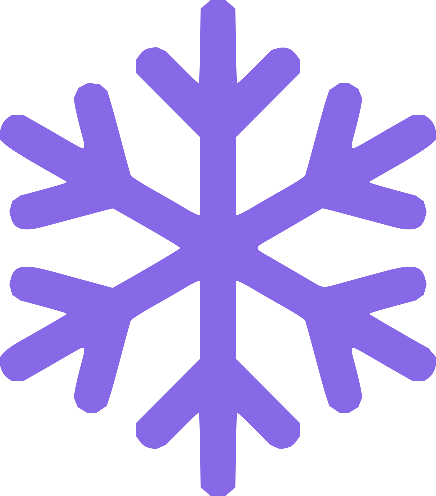

Scenarios
Collision
Projectile
Rolling
Read
Attention-weighted probe
DiT

\frame{=}0
\frame{>}0
ridge probe
\rT{\probe}\attnPool
Probe direction
\probe
true
\vel
decoded
\vel
ball
can
Write
Tracker-trained direction
DiT
object
tracker
\Ls_{\mathrm{steer}}
Steering direction
\steerDir
baseline
steered
Joint direction
\Ls_{\mathrm{steer}}+\Ls_{\mathrm{probe}}
decodes + steers
motion direction only
Dashed: preliminary.